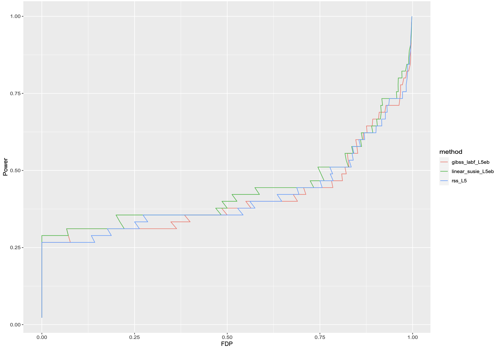

Generalizing SuSiE
Stephens’ Group Meeting
1/23/24
Plan
- Talk about our current approach, GIBSS
- Talk about (generalized) additive models
IBSS
Algorithm 1 from (1)
Generalized IBSS
- GLM \(\mu(x) = \mathbb E[Y |X = x]\). \(g(\mu(x)) = \sum_l \psi_l = \sum_l x^T \beta_l\)
- Idea: plug in point estimates \({\hat\psi} _j, j\neq l\) to estimate \(\psi_l\)
Variational Objective
log joint:
\[\begin{align} F(\beta_1, \dots, \beta_L) &= \log p(y | \sum_l(\psi_l)) + \sum_{l=1}^L\log p(\psi_l), \\ \psi_l &= X \beta_l, \\ \beta_l &\sim g_l \end{align}\]
ELBO:
\[\begin{align} \mathcal F(q_1, \dots, q_L) &= \mathbb E_q \left[ F(\beta_1, \dots \beta_L) \right] + \sum_l H(q_l) \\ q(\beta_1, \dots, \beta_L) &= \prod q_l(\beta_l) \end{align}\]
GIBSS as a first order approximation to CAVI
Exponential family \(f(y | \eta) \propto \exp \{y \eta - A(\eta) \}\), \(A\) convex. Additive model: \(\eta = \sum \eta_l\)
\[\begin{align} \mathbb E_q[\log f(y | \eta)] &= \mathbb E_{q_l} [\mathbb E_{q_{-l}}[\log f(y | \eta_l + \eta_{-l})] | \eta_l] \\ &\leq \mathbb E_{q_l} [\mathbb E_{q_{-l}}[\log f(y | \eta_l + \bar\eta_{-l}) + \nabla \log f_{\eta_{-l}}(\bar \eta_{-l})) (\eta_{-l} - \bar \eta_{-l})] | \eta_l] \\ &= \mathbb E_{q_l} [\log f(y | \eta_l + \bar\eta_{-l})] \\ \end{align}\]
Notes:
- For exponential families, we upper bound the ELBO for each coordinate update, a bit awkward.
- We use a different approximation at each step, not clear if the algorithm converges.
Generalized SER
Approximating Generalized SER

Additive effects model
\[\begin{align} {\bf y} | \mu & \sim N(\mu, \sigma^2) \\ \mu &= \sum_l \mu_l \\ \mu_l &\sim g_l \end{align}\]
SuSiE is the special case where \(g_l \sim SER\)
Backfitting in the additive regression model
(2)
Rationale for maximum likelihood estimation
Fig 1. reproduced from (3)
Additive effects model
(1)
Generalized additive model
\(g\) the canonical link function, \(\mathbb E[y] = g^{-1}(\eta)\)
\[\begin{align} y | \eta &\sim p_{g^{-1}(\eta)} \\ \eta &= \sum_l \eta_l \\ \eta_l &\sim g_l \end{align}\]
Generalized local scoring
(2)
Comparison to GIBSS
- Generalized local scoring iteratively updates weights, and fits the weighted additive model
- GIBSS performs IRLS for each variable, fixing \(L-1\) additive components
- Estimates don’t
Variational Objective
log joint:
\[\begin{align} F(\beta_1, \dots, \beta_L) &= \log p(y | \sum_l(\psi_l)) + \sum_{l=1}^L\log p(\psi_l), \\ \psi_l &= X \beta_l, \\ \beta_l &\sim g_l \end{align}\]
ELBO:
\[\begin{align} \mathcal F(q_1, \dots, q_L) &= \mathbb E_q \left[ F(\beta_1, \dots \beta_L) \right] + \sum_l H(q_l) \\ q(\beta_1, \dots, \beta_L) &= \prod q_l(\beta_l) \end{align}\]
Mode rather than mean?
\[\begin{align} F(\beta_1, \dots, \beta_L) &= \log p(y | \sum_l(\psi_l)) + \sum_{l=1}^L\log p(\psi_l), \\ \end{align}\]
\[\begin{align} \beta_l^* = \arg\max_{\beta_l} F(\beta_1, \dots, \beta_L) \end{align}\]
Notes:
- Converges to a mode of the posterior.
- Just iterative stepwise regression with fixed \(L\).
- Seems undesirable to include \(\beta_l\) for effects with weak evidence.
- Resembles CAVI when \(q(\gamma_l)\) is concentrated on highly correlated variables.
- Can still report SER posteriors for each effect \(l\).
Laplace vs Wakefield (Review)

Figure 1: Wakefield’s ABF can be order of magnitude off when the \(z\)-score is large
Problems with Wakefield (Review)
\[ \text{ABF} = \sqrt{\frac{V+W}{V}} \exp (- \frac{z^2}{2} \frac{W}{V + W}) \]
SuSiE-RSS and the Wakefield BF
- Recall that Wakefield’s ABF is not accurate when the \(z\)-score is large
- Applying SuSiE-RSS to summary statistics from some other model besides Gaussian linear model
How large do the \(z\)-scores need to be?
End
A
\[\begin{align} \mathcal F(q_1, \dots, q_L) = \mathbb E_q \left[ F(\beta_1, \dots \beta_L) \right] + \sum_l H(q_l) \end{align}\]
Coordinate ascent on \((\beta_l)\). For SuSiE, at each step fit an SER, but only return the posterior mode of the SER, rather than the mean. Essentially stepwise selection, but reports a posterior distribution for each effect. ## Backfitting
Maximize the expected log likelihood
\[ \begin{align} \mathbb E[ l(\hat{\eta}(X), Y)] = \max_{\eta} \mathbb E[l(\eta(X), Y)] \end{align} \]
Overview
- Publication plan:
- Generalized SuSiE via IBSS, emphasis on fine-mapping for non-Gaussian models
- GSEA with logistic SuSiE
Fine-mapping under the multivariate Gaussian model
Most fine-mapping methods assume summary statistics from marginal association studies are normally distributed, with covariance determined by LD 1
\[\begin{align*} \hat{ {\bf z} } \sim N({\bf z}, R) \end{align*}\]
Statistical property of OLS– what if the marginal effects are coming from somewhere else?
What do we want to accomplish?
- Establish when there is a problem with fine-mapping with summary stats from non-Gaussian models
- (Hopefully) find that these situations are not uncommon
- (Hopefully) demonstrate that GIBSS offers improvement in these situations
- (Fallback) advise people to fine map with summary statistics from linear models
Three horse race
| Method | Notes | Summary stats |
|---|---|---|
| Generalized IBSS | “correct” model, hueristic algorithm | No |
| Logistic + RSS | ad-hoc, actually used (8,9) | Yes |
| Linear + RSS | mis-specified model, correct algorithm | Yes |
GIBSS overview
- Compute univariate effect estimates using regression of choice, must return MLE and stderr
- Compute/approximate BFs and posterior means: Laplace, quadrature, etc.
- Use predictions as fixed offsets when updating next effect
- Iterate until
convergence(we don’t know if it converges)
Key questions
- Generalized IBSS vs Logistic RSS
- \(L=1\) case reduces to IBSS-Laplace vs IBSS-ABF
- GIBSS-Laplace should be strictly better, but by how much, and when?
- \(L > 1\) all bets are off with Logistic RSS
- Linear SuSiE vs Logistic RSS
- Helpful to look at \(L=1\) case, Linear + Wakefield vs Logistic + Wakefield
- In GWAS linear regression is often a good approximation to logistic regression
- Linear SuSiE vs Generalized IBSS
- When does linear SuSiE give reliable results?
- When does GIBSS provide and advantage?
Potential problems
Logistic + RSS
- Covariate of marginal \(z\)-scores do not correspond with LD
- Under appreciated source of “LD Mismatch?”
- Follow-up: what is the correct covariance matrix?
- Inherits problems from using ABF– not the most accurate
Logistic GIBSS
- Marginal effect estimates are biased when there is a large genetic component
Correlation of marginal effects in logistic regression:
- Simulate \(\begin{bmatrix}x_1 \\ x_2 \end{bmatrix} \sim N(\begin{bmatrix}0 \\ 0 \end{bmatrix}, \begin{bmatrix}1 & \rho \\ \rho & 1 \end{bmatrix})\)
- Simulate \(y\) under a logistic model \(y \sim Bin(1, \sigma(\psi)), \; \psi := b_0 + b x_1\)
- \(cor(z_1, z_2) \neq \rho \implies\) LD matrix is the wrong covariance matrix
Correlation of marginal effects (cont)
An under-appreciated source of “LD mismatch”?
\(n = 500\), \(b_0 = -1\), \(b = 0, 1, 2, 3\) 1
Laplace vs Wakefield (Review)
Figure 2: Wakefield’s ABF can be order of magnitude off when the \(z\)-score is large
Problems with Wakefield (Review)
!()[resources/abf_biased.png]
!()[resources/abf_eq.png]
SuSiE-RSS and the Wakefield BF
- Recall that Wakefield’s ABF is not accurate when the \(z\)-score is large
- Applying SuSiE-RSS to summary statistics from some other model besides Gaussian linear model
How large do the \(z\)-scores need to be?
Biased effect estimates (and BFs)
Simulation: one causal variant in the locus that explains \(1\%\) of heritability of liability. \(h^2 = 0.1, 0.2, 0.5, 0.9\)
\[\begin{align*} y \sim Bin(1, \sigma(\psi)) \\ \psi = b_0 + b x + \epsilon \\ \epsilon \sim N(0, \sigma^2) \end{align*}\]
Biased effect estimates (and BFs)
Biased effect estimates (and BFs)
95% C.I. for different \(h^2\)
Biased effect estimates (and BFs)
- For phenotypes with substantial \(h^2\) of liability, restricting our attention to a single locus will lead to biased effect estimates
- Remark: linear model doesn’t struggle with this issue because in practice we estimate the residual variance (or set conservatively)
- Remark:basically a random intercept model, but this seems a little different than the usual motivation for mixed model approaches.
Real data analsis
- Q: if we reun SuSiE, GIBSS, Logistic + RSS on real case-control GWAS do we get qualitatively different results?
- Don’t know ground truth, hard to tell what is performing better
- Replication failure rate (RFR) among PIPs proposed in (10) may support claim that using GIBSS > Linear + RSS > Logistic + RSS
- Other ideas?
- Do you know of imbalanced case-control GWAS, survival GWAS, etc. GWAS on count based phenotypes, etc to test out?
Simulation
\[ \begin{align*} y_i &\sim Bin\left(1, \sigma \left(b_0 + \sum_{j=1}^q b_j x_{ij} + \delta\right)\right)\\ b &\sim N(0, \sigma^2) \\ \delta &\sim N(0, \nu - q \sigma^2)\\ \end{align*} \]
| Value | Description |
|---|---|
| \(X\) | Standardized genotypes |
| \(\sigma^2\) | Variance of standardized effects, i.e. \(b \sim N(0, \sigma^2)\) |
| \(q\) | Number of causal variants in locus |
| \(\rho\) | Fraction of variance of genetic component in-locus |
| \(k\) | Fraction of cases (determines \(b_0\)) |
| \(q\sigma^2\) | (Expected) variance of genetic component in-locus |
| \(\nu\) | \(q \sigma^2/\rho\), (expected) variance of genetic component |
| \(h^2\) | \(\nu / (\nu + \pi^2/3)\), (expected) heritability of liability 1 |
Examples where SuSiE is applied to non-Gaussian linear summary stats
(8), Alzheimers meta analysis combining linear and logistic association studies (9) logistic-mixed model SAIGE + SuSiE
When does Logistic + Wakefield perform poorly?

- accidentally wiped the simulations, need to regenerate
- apparently
Dealing with intercept + covariates
A few options:
- Estimate in outer loop, treat as a fixed offset while estimating SERs
- Re-estimate covariate effects for each variable
- Found that reestimating intercept was helpful
Univariate BF

Limiting BF
Limiting BF
Idea put a normal prior on all covariates \(\begin{bmatrix} \alpha \\ \beta \end{bmatrix} \sim N(\begin{bmatrix} 0 \\ 0 \end{bmatrix}, \begin{bmatrix} I_{p-1} \tau_0^{-1} & 0 \\ 0 & \tau_1^{-1} \end{bmatrix}\) and compute Laplace approximation to the BF. Take \(\tau_0 \rightarrow 0+\).
Q: How variable is the scaling factor? Can we get away with just using the univariate BF?
Better quadrature rule
Gauss-Hermite quadrature
\[ I = \int f(x) e^{-x^2} dx \approx \sum_{i=1}^n w_i f(x_i) \]
\((x_i)_{i=1}^n\) are the roots of the Hermite polynomial \(H_n(x)\), \(w_i = \frac{2^{n-1} n! \sqrt{\pi}}{n^2 H_{n-1}^2 (x_i)}\)
\[ I = \int f(x) dx = \int \left[\frac{f(x)}{q(x)} \right] q(x) dx, \;\; q(x) = N(x | \mu, \sigma^2)\; \text{s.t.}\; \frac{f}{q} \approx 1 \]
- Asymptotically correct
- Otherwise, integrating a function with little variation where the integrand has mass
- Upshot: very accurate integrals with e.g. \(n = 8, 16\).
(note: change of variable + scaling factor to apply the \(n\) point Hermite quadrature rule)